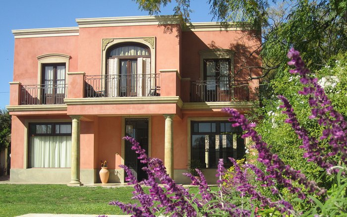

Pequeño y encantador hotel manejado por la familia Draghi. Práctico y elegante a un paso de las principales lugares de interés turístico de San Antonio de Areco. Un hotel ideal para conocer e impregnarse de la cultura local. El hotel se comunica a través de su jardín interno al Taller y Museo de Platería Draghi. Un hotel ideal para conocer e impregnarse de la cultura local. ofreciendo un alojamiento práctico y elegante en el casco antiguo de San Antonio de Areco, a un paso de las principales negocios, restaurantes, bares y lugares de interés turístico.